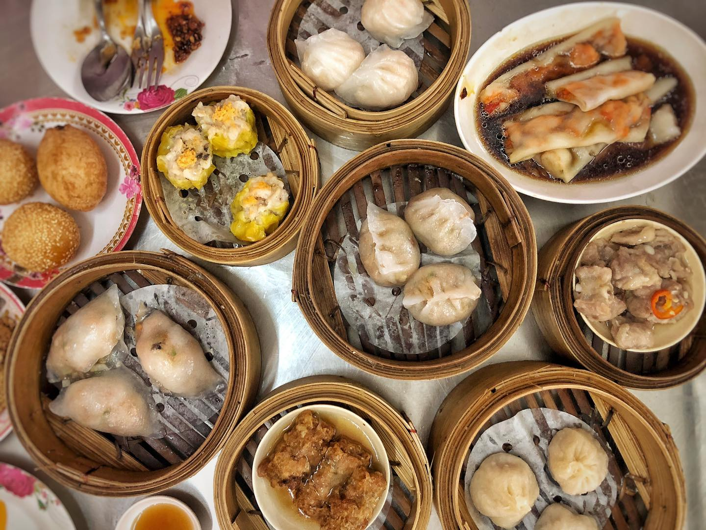
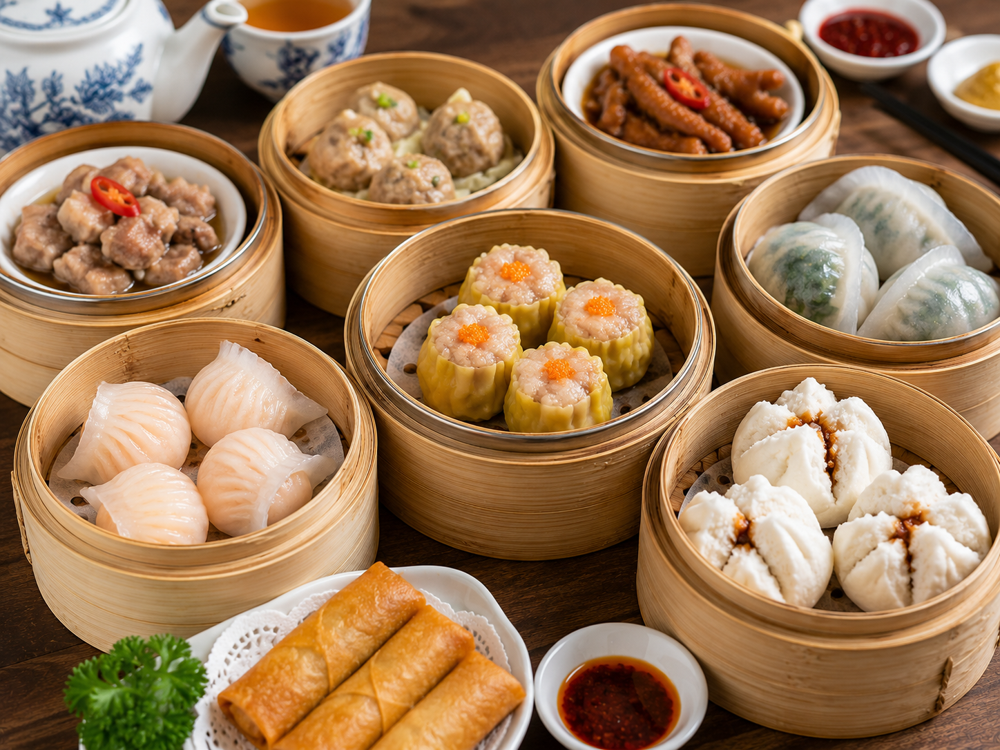
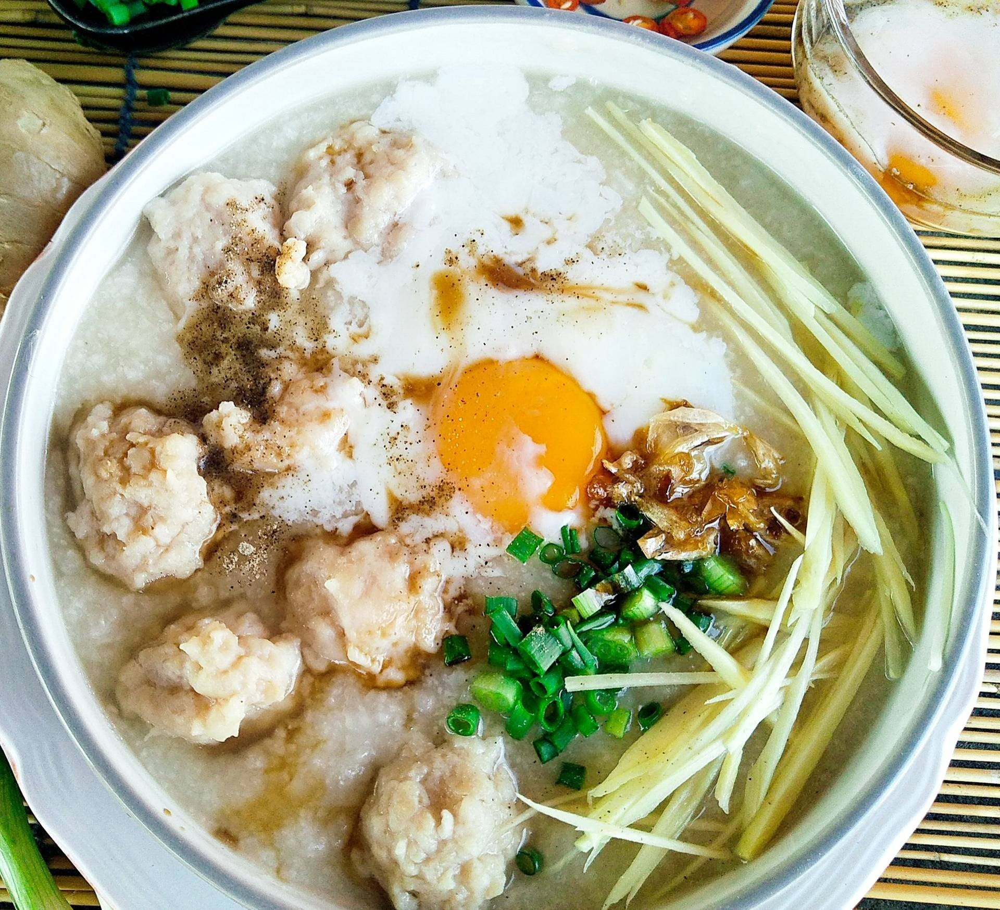

ภาคใต้ของประเทศไทยได้รับอิทธิพลจากชาวจีนฮกเกี้ยนและชาวจีนโพ้นทะเล ที่เข้ามาค้าขายและตั้งถิ่นฐานในจังหวัดต่าง ๆ เช่น ภูเก็ต ตรัง สงขลา และสุราษฎร์ธานี ส่งผลให้วัฒนธรรมการประกอบอาหารของจีนผสมผสานกับวัตถุดิบท้องถิ่น จนเกิดเมนูที่มีเอกลักษณ์เฉพาะของภาคใต้
อาหารที่ได้รับอิทธิพลจากจีนในภาคใต้ ได้แก่ หมี่ฮกเกี้ยน บะกุ๊ดเต๋ ติ่มซำ โจ๊ก และบะหมี่ต่าง ๆ ซึ่งได้รับการปรับรสชาติให้เข้ากับความนิยมของคนไทย โดยเฉพาะการเพิ่มเครื่องเทศและวัตถุดิบพื้นเมือง ทำให้อาหารมีรสชาติเข้มข้น และเป็นที่รู้จักของนักท่องเที่ยวทั้งชาวไทยและชาวต่างชาติ

ติ่มซำ ติ่มซำเป็นอาหารว่างแบบจีนที่ได้รับความนิยมอย่างมากในภาคใต้ โดยเฉพาะจังหวัดตรัง สงขลา และภูเก็ต ประกอบด้วยอาหารชิ้นเล็ก ๆ ที่นึ่งหรือทอด เช่น ขนมจีบ ฮะเก๋า และซาลาเปา ชาวจีนได้นำวัฒนธรรมการรับประทานติ่มซำเข้ามาเผยแพร่ในประเทศไทย จนกลายเป็นส่วนหนึ่งของวิถีชีวิตและอาหารเช้าของคนภาคใต้

บะกุ๊ดเต๋ บะกุ๊ดเต๋เป็นอาหารที่ได้รับอิทธิพลจากชาวจีนฮกเกี้ยนและชาวจีนแต้จิ๋วที่อพยพเข้ามาตั้งถิ่นฐานในภาคใต้ของประเทศไทย โดยเฉพาะในจังหวัดสงขลาและพื้นที่ใกล้เคียง ลักษณะเด่นคือซุปกระดูกหมูที่นำมาตุ๋นกับสมุนไพรจีนและเครื่องเทศหลากหลายชนิด เช่น อบเชย โป๊ยกั๊ก และพริกไทย จนได้น้ำซุปที่มีกลิ่นหอมและรสชาติเข้มข้น คำว่า "บะกุ๊ดเต๋" มีความหมายว่า "ชากระดูกหมู" ในภาษาจีนฮกเกี้ยน เนื่องจากในอดีตนิยมรับประทานคู่กับชาจีน ปัจจุบันบะกุ๊ดเต๋ได้รับความนิยมอย่างแพร่หลายในภาคใต้ และถือเป็นหนึ่งในอาหารที่สะท้อนอิทธิพลของวัฒนธรรมจีนที่มีต่ออาหารไทยได้อย่างชัดเจน

โจ๊ก โจ๊กเป็นอาหารที่ได้รับอิทธิพลจากประเทศจีน มีลักษณะเป็นข้าวต้มที่เคี่ยวจนเนื้อละเอียดและมีความข้น นิยมรับประทานเป็นอาหารเช้า โดยมักใส่หมูสับ ไข่ลวก ขิง และต้นหอม ชาวจีนที่อพยพเข้ามาในประเทศไทยได้นำวัฒนธรรมการรับประทานโจ๊กเข้ามาเผยแพร่ จนกลายเป็นอาหารยอดนิยมที่พบได้ทั่วทุกภูมิภาคของประเทศ